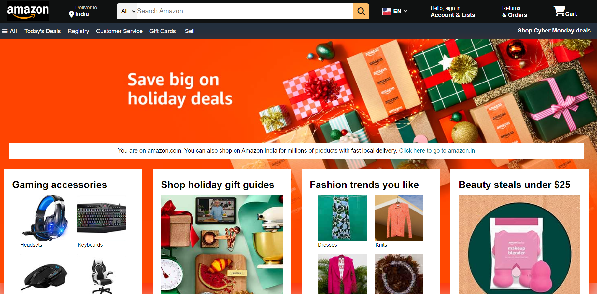
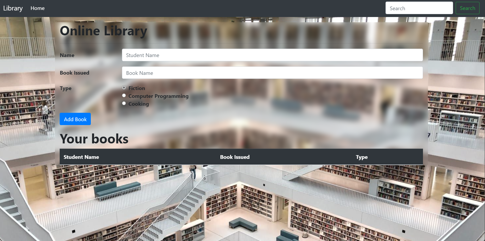
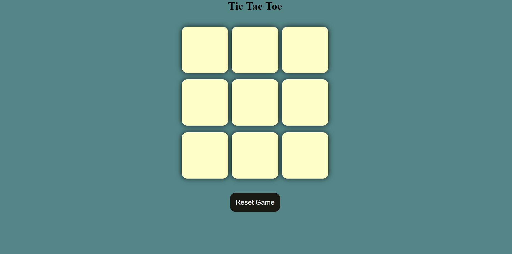
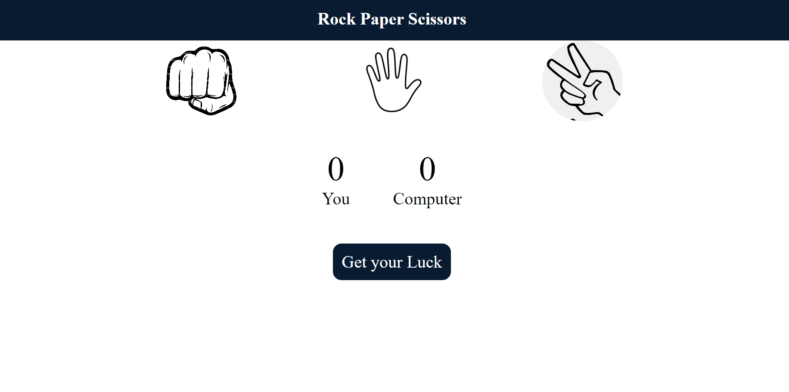
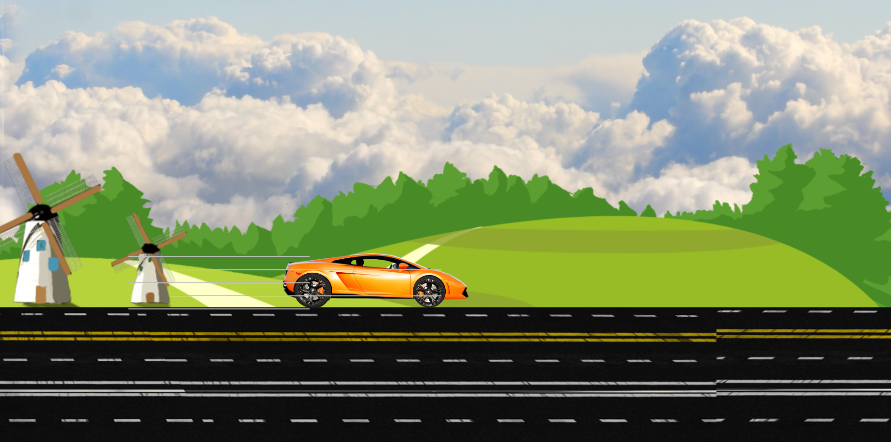

Hi, My name is
Robin Gusain
Robin Gusain
and I am an passionate

Projects

Amazon Clone (Nov 2023-Nov 2023)
"My inaugural mini-project marked the beginning of my journey into HTML and CSS. It represented
a significant milestone and offered invaluable hands-on experience as a novice. Completing this
project in just one week was a triumph. Special thanks to my mentor, Shradha Khapra, for their
guidance."

Library Management System (Currently Working)
"This was my second project on a library management system. In this project, I integrated HTML,
CSS, Bootstrap, and JavaScript. It is a basic implementation of book issuance from a library and
then displaying information on the screen. Mentor: Harry."

Tic Tac Toe game (Jan 2024-Jan 2024)
This was my third project on the infamous game known as "Zero-Cross." I utilized HTML, CSS, and
JavaScript. My main focus was on logic building and ensuring a smooth flow of the game. Mentor:
Shradha Khapra.

Stone Paper Scissor game (Jan 2024-Jan 2024)
This was my fourth project in which I used HTML, CSS, and JavaScript. My main focus was on logic
building.
Mentor: Shradha Khapra

Lamborghini Car Animation (Feb 2024-Feb 2024)
"My fifth project involved integrating HTML, CSS, and JavaScript. My focus was on designing and
ensuring a smooth flow for the game. Additionally, I incorporated background sound to enhance
the user's experience. Mentor: Harry."